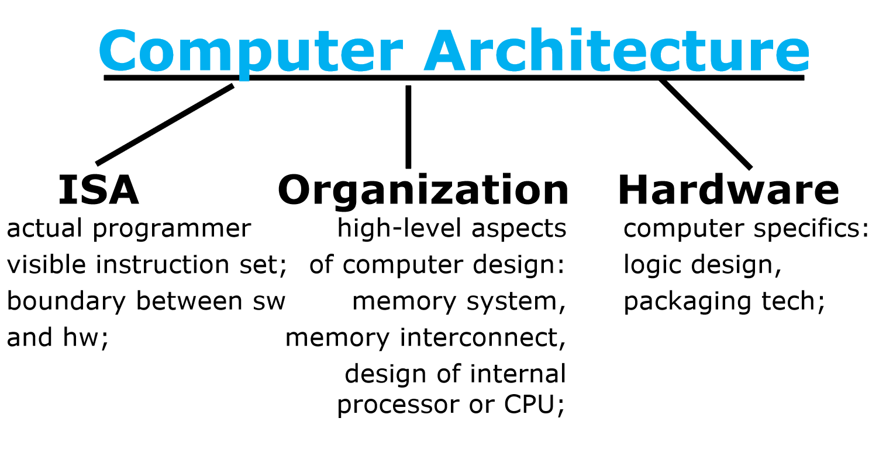
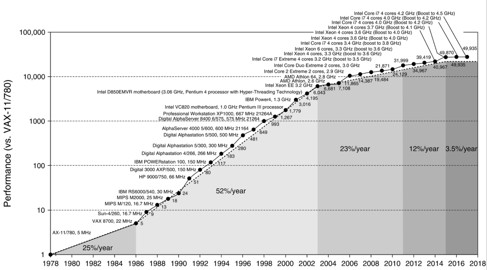
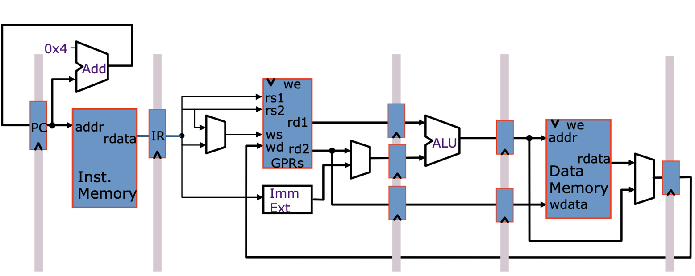
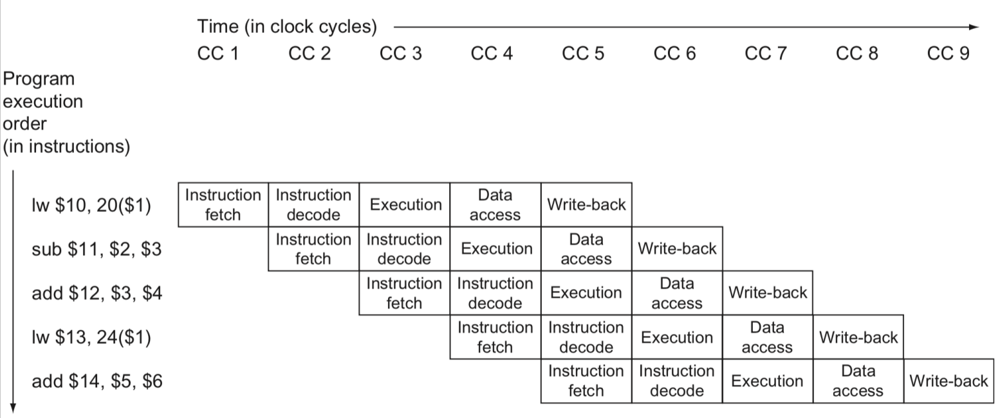
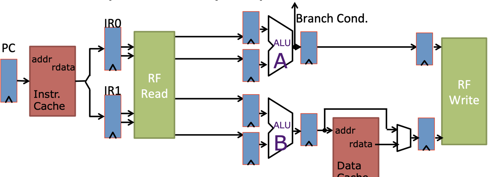
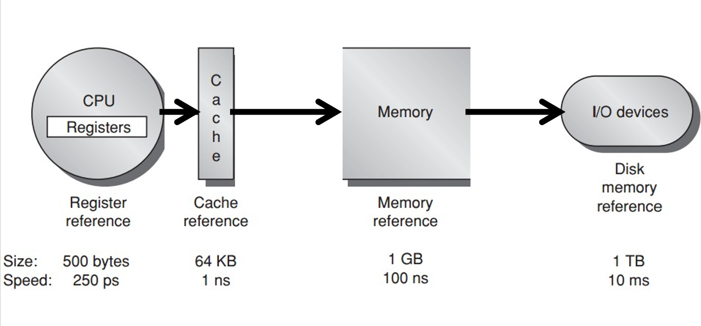
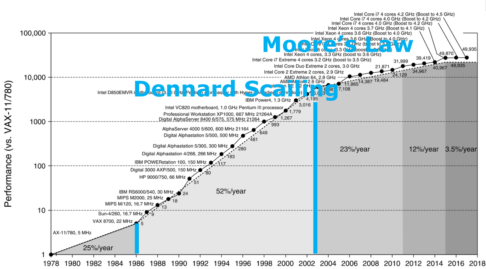
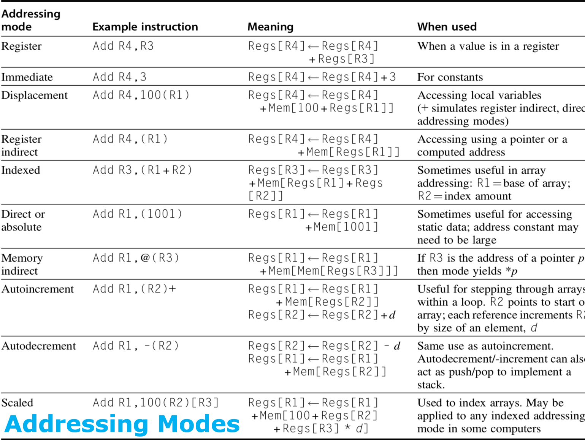
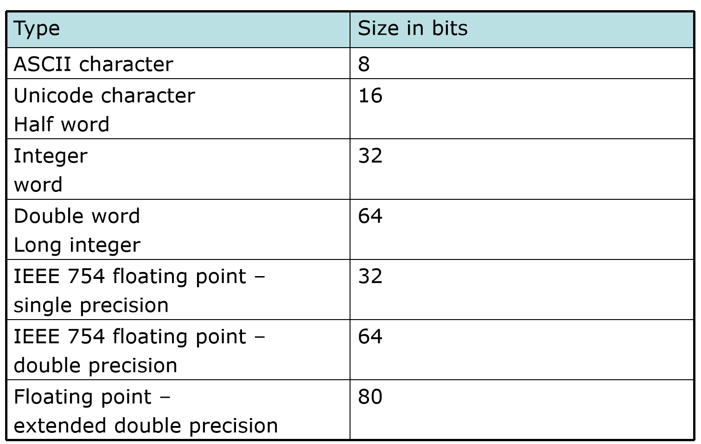

计算机体系结构1-1:设计原则与性能演进
导言：什么是计算机体系结构？
传统的定义可能会告诉你，计算机体系结构是“程序员可见的系统属性”，是软硬件之间的接口（Instruction Set Architecture, ISA）。这个定义没错，但它没有抓住这门学科的灵魂。
希望大家从第一天起就建立一个新的认知：计算机体系结构是一门关于“取舍”（Trade-off）的艺术与科学。我们的目标不是造出一台“最快”或“最强”的计算机，而是要在成本（Cost）、功耗（Power）、性能（Performance）、可靠性（Availability） 等多个相互冲突的目标之间，为特定的应用场景找到最优的平衡点。
这门课的核心，就是带大家理解这些“取舍”背后的设计哲学。我们将从系统层面出发，探讨每一个设计决策的“为什么”，以及它如何影响了整个计算机世界的形态。
我们的讨论将围绕三个核心层次展开，这构成了“计算机体系结构”的完整定义：
- 指令集体系结构 (Instruction Set Architecture, ISA)：软硬件的契约。它定义了机器语言程序员（或编译器）所能看到的一切，如指令、寄存器、内存模型等。
- 组织或微体系结构 (Organization / Microarchitecture)：ISA的具体实现。它涉及CPU内部的高层设计，如流水线、缓存系统、多核互联等。同样的ISA可以有完全不同的微体系结构实现（例如，Intel的酷睿i3和i9都实现了x86-64 ISA，但性能天差地别）。
- 硬件 (Hardware)：微体系结构的物理实现。这包括具体的逻辑门设计、芯片封装技术、散热方案等。

第一部分：我们如何让计算机变得如此之快？
我们先来看一张震撼人心的图表。

这张图展示了过去40年处理器性能的指数级增长。从1980年到21世纪初，我们见证了每年超过50%的性能复合增长率，这是一个技术史上的奇迹。问题是，这个奇迹是如何发生的？
答案并非单一的，而是两大核心技术支柱共同作用的结果：指令级并行 (Instruction-Level Parallelism, ILP) 和 高速缓存 (Caching)。
1.1 RISC的兴起与指令级并行
在80年代，主流的CISC（复杂指令集计算机）设计哲学是让指令尽可能强大，一条指令完成复杂的操作，以缩小所谓“语义鸿沟”。但这种复杂的指令解码困难，执行时间不一，极大地阻碍了硬件效率的提升。
这时，一种全新的设计哲学——RISC（精简指令集计算机） 应运而生。RISC的核心思想并非简单地“减少指令数量”，而是：
- 指令格式统一化、简单化：所有指令长度固定（如32位），操作码和操作数字段位置相对固定。这使得硬件可以极快地解码指令。
- Load-Store架构：只有
load和store指令可以访问内存，所有计算操作都只在寄存器之间进行。这简化了指令执行过程，避免了复杂的内存寻址。 - 依赖编译器：将CISC中由硬件完成的复杂操作，转交给编译器用简单的RISC指令序列来组合实现。
为什么这个哲学是革命性的？ 因为一个简单、规整的指令集，为硬件实现指令级的“并行”处理铺平了道路，就像标准化的零件让工厂的流水线作业成为可能一样。
1.1.1 流水线 (Pipelining)：指令执行的“装配线”
如果一条指令的执行需要多个步骤（如取指IF、译码ID、执行EX、访存MEM、写回WB），我们为什么要等一条指令走完全部流程再开始下一条呢？
流水线技术将指令执行过程切分成多个阶段，让不同指令的不同阶段重叠执行。就像汽车装配线一样，当一辆车在安装轮胎时，下一辆车可以同时在安装引擎。
 
通过流水线，我们理想情况下可以将每条指令的平均执行周期数（Cycles Per Instruction, CPI）降低到接近1。这意味着，虽然执行完单条指令的总时间（延迟）没有变，但整个系统的吞吐率（单位时间完成的指令数）大大提高了。
- 设计权衡：流水线的深度不是越深越好。更深的流水线意味着更高的时钟频率潜力，但也会增加因分支预测失败等导致的流水线排空（flush）惩罚，同时增加了级间锁存器的开销。
1.1.2 多发射 (Multiple Issue) / 超标量 (Superscalar)：更宽的流水线
当CPI已经接近1时，如何进一步提升性能？答案是：如果一条流水线不够，那就用多条。
超标量处理器在一个时钟周期内可以同时取指、译码和发射多条指令到不同的执行单元（如两个ALU、一个FPU等）。这使得CPI可以小于1，即平均每个时钟周期完成超过一条指令。

例如，一个2发射的超标量处理器，其理论峰值CPI为0.5（或IPC=2）。
- 设计权衡：多发射的代价是巨大的。硬件需要处理指令间的依赖关系（数据依赖、控制依赖、结构依赖），需要更复杂的调度逻辑、更多的端口和总线，功耗和芯片面积都急剧增加。这也是为什么从单发射到2发射/4发射提升显著，但继续增加宽度会遇到收益递减的瓶颈。
1.2 存储器层次结构与缓存
CPU性能的狂飙突进，很快遇到了一个巨大的障碍——内存墙 (The Memory Wall)。CPU的速度增长远超DRAM内存的速度增长。即使CPU能在一瞬间处理完数据，如果数据还在遥远的内存里，它也只能“无所事事地等待”。
解决这个问题的设计哲学是局部性原理 (Principle of Locality)：
- 时间局部性：如果一个数据项被访问，它很可能在不久的将来再次被访问。
- 空间局部性：如果一个数据项被访问，它周围的数据项也很可能在不久的将来被访问。
基于这个原理，计算机设计师构建了存储器层次结构 (Memory Hierarchy)。

这个结构是一个金字塔，越靠近CPU的存储器，速度越快、容量越小、每字节成本越高。
- 寄存器 (Registers)：最快，在CPU核心内部，容量极小（几百字节）。
- 缓存 (Cache)：使用SRAM技术，比DRAM快得多，容量中等（KB到MB级别）。
- 主存 (Main Memory)：使用DRAM技术，速度较慢，容量大（GB级别）。
- 永久存储 (Permanent Storage)：硬盘/SSD，最慢，容量最大（TB级别）。
缓存 (Caching) 是这个体系的灵魂。它自动地将主存中最近被频繁访问的数据块复制一份进来。当CPU需要数据时，它首先检查高速缓存：
- 缓存命中 (Cache Hit)：数据在缓存中，CPU以极快的速度获取数据。
- 缓存缺失 (Cache Miss)：数据不在缓存中，CPU必须暂停，等待数据从慢速的主存中加载到缓存，然后再读取。
一次缓存缺失的代价可能是几百个CPU周期，这就是为什么缓存命中率对系统整体性能至关重要。
- 设计权衡：缓存的设计充满了取舍。缓存大小、相联度、替换策略（如LRU）、写策略（写穿/写回）等都会影响命中率、延迟和硬件复杂度。我们将在后续课程中深入探讨。
第二部分：范式转移：后摩尔定律时代的挑战与机遇
21世纪初，持续了近20年的性能盛宴戛然而止。性能增长曲线明显放缓。
为什么？因为两个经典的“定律”走到了尽头。
2.1 两大“墙壁”：功耗墙与频率墙
- 登纳德缩放定律 (Dennard Scaling) 的终结：该定律指出，随着晶体管尺寸缩小，其功耗密度保持不变。这意味着我们可以在同样面积和功耗下集成更多更快的晶体管。然而，在2004年左右，由于漏电流等物理极限，即使晶体管尺寸继续缩小，其功耗也无法同比例下降。这导致了功耗墙 (The Power Wall)——我们无法在可接受的散热范围内继续提高芯片的功耗。
- 摩尔定律 (Moore's Law) 的放缓：虽然晶体管数量的增长仍在延续（尽管变慢），但我们已无法简单地通过提高时钟频率来获得性能提升（频率墙）。过高的频率会带来指数级增长的功耗和散热问题。

设计哲学的根本转变：既然无法让单个核心变得更快（提高ILP的收益递减，频率无法提升），唯一的出路就是在一个芯片上集成多个核心，即走向多核处理器 (Multi-Core Processor)。
2.2 新的挑战：并行编程与阿姆达尔定律
多核处理器的出现，将性能提升的压力从硬件设计师部分转移给了软件开发者。仅仅增加核心数量并不能自动加速程序，除非程序本身可以被有效地并行化。
而并行加速的理论上限，被阿姆达尔定律 (Amdahl's Law) 精准地刻画。
该定律指出，一个程序在多处理器系统上的加速比，受限于程序中必须串行执行的部分的比例。
其公式为： $$ \text{Overall Speedup} = \frac{1}{(1 - F_{\text{enhanced}}) + \frac{F_{\text{enhanced}}}{S_{\text{enhanced}}}} $$ 其中：
- $F_{\text{enhanced}}$ 是程序中可以被并行化部分所占的执行时间比例。
- $S_{\text{enhanced}}$ 是这部分并行化后获得的加速比（例如，使用N个核心，理想情况下为N）。
阿姆达尔定律的深刻启示：
-
串行部分是瓶颈：假设一个程序有10%的部分是无法并行化的（$F_{\text{enhanced}} = 0.9$）。那么即使我们用无穷多的处理器（$S_{\text{enhanced}} \to \infty$），这个程序的极限加速比也只是 $\frac{1}{(1-0.9)} = 10$ 倍。
-
优化最耗时的部分 (Make the common case fast)：阿姆达尔定律告诉我们，我们应该集中精力优化程序中占比最大的部分。
-
设计权衡：阿姆达尔定律也指导着芯片设计。如果大部分程序都无法利用超过8个核心，那么设计一个64核的桌面CPU可能就不是一个明智的选择。或许，设计一个拥有8个强大核心，外加一些专用加速器（如GPU）的异构系统，会是更好的方案。
此外，我们还要警惕“拉德玛定律”（Lhadma's Law，Amdahl的反写，一个玩笑式的说法）：不要为了优化常见情况而过度损害非常见情况的性能，否则总体性能可能会下降。
第三部分：不同设计目标的体系结构
我们已经理解了驱动计算机发展的核心技术和限制。现在，让我们看看这些设计原则和权衡在现实世界中催生了怎样多样化的计算机形态。我们将计算机分为五大类。
3.1 五大计算机类别及其核心设计目标
-
个人移动设备 (PMD - Personal Mobile Device)
- 核心驱动：能效和响应性。电池续航是生命线，同时用户交互（如触摸滑动）必须流畅。
- 设计体现：低功耗处理器（如ARM的big.LITTLE大小核架构），无风扇设计，对多媒体处理有硬件加速，系统常有“软实时”要求（偶尔掉一帧视频可以接受，但不能频繁卡顿）。
-
桌面计算机 (Desktop Computing)
- 核心驱动：性价比 (Price-Performance)。在给定价格范围内，提供最强的综合性能，包括计算、图形和I/O。
- 设计体现：这是最“均衡”的设计。拥有强大的CPU和GPU，合理的内存和存储，但对功耗和可靠性的要求不如PMD和服务器苛刻。
-
服务器 (Servers)
- 核心驱动：可靠性 (Availability)、可扩展性 (Scalability) 和 吞吐率 (Throughput)。服务器宕机的损失是巨大的。
- 设计体现：硬件冗余（如双电源、RAID），ECC内存，大量的I/O带宽和内存容量，处理器核心数多于单个核心的频率。关注的是单位时间内能处理多少个请求，而非单个请求有多快。
-
集群/仓库级计算机 (Clusters/WSC - Warehouse-Scale Computers)
- 核心驱动：大规模下的性价比和能耗。谷歌、亚马逊等公司的整个数据中心可以看作是一台巨大的计算机。
- 设计体现：由大量廉价、普通的服务器通过高速网络连接而成。通过软件实现可靠性（单个节点坏了没关系），而非依赖昂贵的硬件。设计重点是降低总体拥有成本（TCO），包括电力和冷却成本。
-
嵌入式计算机/物联网 (Embedded Computers/IoT)
- 核心驱动：在满足特定性能需求下的最低成本。
- 设计体现：功能高度特化，通常只运行单一、固定的软件。为了极致的成本和功耗控制，会裁剪掉一切不必要的功能。例如，洗衣机里的微控制器。与通用计算机的根本区别在于，它通常不被设计用来运行第三方软件。
这五类计算机完美地展示了体系结构设计中的“取舍”艺术。没有一种“最好”的架构，只有“最适合”特定场景的架构。
第四部分：深入指令集体系结构 (ISA)
现在，我们回到体系结构的核心——ISA。ISA是计算机的“灵魂”，它定义了硬件能做什么，以及软件如何指挥硬件。我们将从7个维度来剖析ISA的设计。
4.1 ISA的类别 (Class of ISA)
- 设计抉择：计算指令的操作数从哪里来？
- 寄存器-内存型 (Register-Memory)：允许指令直接对内存中的操作数进行计算（如
ADD R1, [1001]）。这是CISC（如x86）的典型特征。 - 加载-存储型 (Load-Store)：只有
load和store指令能访问内存，计算指令的操作数必须来自寄存器。这是RISC（如ARM, MIPS, RISC-V）的标志。
- 寄存器-内存型 (Register-Memory)：允许指令直接对内存中的操作数进行计算（如
- 为何这是关键抉择？
- CISC：指令更强大，代码密度更高，早期手写汇编时很方便。但指令执行周期不一，硬件实现复杂，不利于流水线。
- RISC：硬件解码和执行流程大大简化，极易实现高效的流水线和超标量。编译器负责将复杂操作分解为简单的指令序列。
- 现代趋势：自1985年以来，几乎所有新设计的ISA都是Load-Store架构。RISC的设计哲学在现代计算机中已占据主导地位。
4.2 内存寻址 (Memory Addressing)
- 字节寻址 (Byte Addressing)：现代计算机内存的最小可寻址单位是一个字节（8位），每个字节都有唯一的地址。
- 数据对齐 (Alignment)：一个大小为
s字节的对象，其地址A若是s的整数倍（A mod s = 0），则称之为对齐的。 - 为什么对齐很重要？
- 未对齐的访问通常会导致两次内存访问。假设内存总线宽度为8字节，一个8字节的
double类型数据若存储在地址5，它会跨越两个8字节的内存块（地址0-7和地址8-15）。硬件需要分别读取这两个块，然后在内部拼接，性能开销巨大。 - 设计权衡：一些ISA（如ARMv8）强制要求对齐，未对齐访问会引发异常。另一些ISA（如x86, RISC-V）允许未对齐访问，但性能会下降。这是“硬件简化 vs. 软件灵活性”的典型取舍。
- 未对齐的访问通常会导致两次内存访问。假设内存总线宽度为8字节，一个8字节的
4.3 寻址模式 (Addressing Modes)
寻址模式定义了指令如何指定其操作数的位置。 
- RISC的简约主义：RISC-V等架构通常只支持几种最基本、最常用的模式：
- 立即数 (Immediate): 操作数是指令本身的一部分。
addi x1, x1, 10 - 寄存器 (Register): 操作数在寄存器中。
add x1, x2, x3 - 位移 (Displacement): 基址寄存器 + 立即数偏移量。这是访问局部变量和数据结构成员最常用的方式。
lw x1, 100(x2)
- 立即数 (Immediate): 操作数是指令本身的一部分。
- CISC的奢华：x86提供了极其丰富的寻址模式，如变址寻址
(R1+R2)，比例变址100(R2)[R3]等。 - 设计哲学对比：
- x86：试图用单条指令完成复杂的地址计算，目标是“一条指令干更多活”。
- RISC-V：坚持用简单的指令序列来完成复杂的地址计算。例如，
add t0, r1, r2; lw x1, 0(t0)来实现x86的(R1+R2)模式。这让硬件设计更简单，虽然指令数可能更多，但由于流水线效率高，总体执行速度往往更快。
4.4 操作数类型与大小 (Types and Sizes of Operands)
ISA需要支持高级语言中的各种数据类型，如8位的char，16位的short，32位的int，64位的long，以及32位和64位的浮点数（遵循IEEE 754标准）。

4.5 操作 (Operations)
ISA提供的操作通常可分为四大类：
- 数据传输 (Data Transfer)：
load,store,move。 - 算术/逻辑 (Arithmetic/Logical)：
add,sub,and,or,shift。 - 控制 (Control)：分支 (
branch)、跳转 (jump)、过程调用 (call)、返回 (return)。 - 浮点 (Floating Point)：浮点加、减、乘、除等。
4.6 控制流指令 (Control Flow Instructions)
- 关键技术：PC相对寻址 (PC-relative addressing)
- 条件分支和大部分跳转指令的目标地址不是一个绝对地址，而是相对于当前程序计数器（PC）的一个偏移量。
- 为什么这么设计？ 这使得代码可以被加载到内存的任何位置而无需修改，即位置无关代码 (Position-Independent Code)。这对于现代操作系统的动态链接库和共享库至关重要。
4.7 ISA的编码 (Encoding an ISA)
- 设计抉择：指令在内存中如何表示成二进制位？
- 定长编码 (Fixed Length)：所有指令长度相同（如RISC-V/MIPS的32位）。
- 变长编码 (Variable Length)：指令长度从1字节到十几字节不等（如x86）。
- 混合编码 (Hybrid)：基本是定长，但提供一个可选的、更短的压缩指令集（如RISC-V的'C'扩展）。
- 设计权衡：
- 定长：解码极其简单快速，硬件逻辑开销小。这是RISC流水线高效的基础。缺点是代码密度可能不高。
- 变长：代码密度高，可以节省宝贵的指令缓存空间。但解码逻辑异常复杂，成为x86处理器前端设计的巨大挑战。
4.8 案例研究：现代ISA的设计典范——RISC-V
RISC-V是近年来学术界和工业界备受瞩目的一个开源ISA。它的设计完美体现了现代RISC哲学：
- 模块化 (Modular)：RISC-V有一个非常小的基础整数指令集（RV32I或RV64I），其他功能（如乘除法'M'、原子操作'A'、单精度浮点'F'、双精度浮点'D'）都作为标准扩展提供。用户可以根据需求自由组合，这对于嵌入式系统到高性能服务器的设计都极具吸引力。
RV64G是RV64IMAFD的简写，代表一个通用的64位配置。 - 编码简洁优雅：
- RISC-V的指令格式（R/I/S/B/U/J类型）设计得非常巧妙。注意到
opcode,rd,rs1,rs2这些关键字段在不同格式中的位置尽可能保持一致。这大大简化了解码硬件的设计，是RISC哲学的精髓体现。
- RISC-V的指令格式（R/I/S/B/U/J类型）设计得非常巧妙。注意到